如何把网站提交给搜索引擎？（在特定情况不需要提交）¶
如果搜索引擎没有看到、看过你的网站，那么你的网站不是不可能参与排名，而是肯定不可能参与排名。
实际上：搜索引擎需要时间来发现（和索引）新网站。
这意味着，如果你在Google中搜索两天前上线的网站，你很可能会很失望。因为，10次中有9次，你可能什么都找不到。
然而，即使在上线几周后，你仍然可能无法在Google，Bing和Yahoo中看到你的网站。这些搜索引擎合计，占了整个个搜索市场份额的96％。
如果你是上述这样的情况，同时，你急需如何把网站提交给对应搜索引擎的知识，那么这篇文章会非常适合你。以下是我们将在本文中讨论的内容：
- 如何将网站提交给baidu, Google，Bing和Yahoo;
- 如何确保它实际被索引（以及如果不是，该怎么做）;
- 为什么要将提交给谷歌不等于排名（以及如何解决此问题）
但首先，让我们解决在2018年许多人普遍遇到的问题.….
你真的需要把你的URL提交给搜索引擎么？¶
其实Google和其他搜索引擎的内容构建并不依赖于提交，这就是它们为什么主动抓取各种网站的原因。
不熟悉抓取？抓取就是，当搜索引擎在网站上找到新链接时，会随后“关注”这些链接页面。如果新发现的链接页面上有有价值的内容时，就将该页面将添加到索引中。
Matt Cutts在这个视频中解释了更多抓取和索引的原理：
https://www.youtube.com/watch?v=BNHR6IQJGZs
同时谷歌还会动过其它的途径了解最新的信息，比如说Chrome浏览器的链接输入，以及域名注册数据。谷歌会不断的为用户寻找最新最有效的页面。
小提示 有些时候SEO会对此有些偏执，于是乎就有了像这个和这个的研究。
总而言之，这意味着搜索引擎非常善于发现新网站和网页。当然，前提是这些页面是从网络上的某个地方能够找到的。 （我们稍后会详细讨论链接的重要性！）
为什么你仍然应该将你的网站提交给搜索引擎?¶
以下是手动提交仍然是“重要”的几个原因：
- 做了比不做要好 。让我们面对现实，无论你是否选择手动提交，搜索引擎都可能找到你的网站。但“可能”足够好吗？提交你的网站只需要一两分钟。那么为什么要冒这个风险呢？
- 搜索引擎无法通过抓取来找出所有内容 。如果你通过下面讨论的方法提交你的网站，将有机会向Google和Bing提供有关网站的一些有用的页面。例如，你可以告诉搜索引擎每个页面的重要程度。搜索引擎蜘蛛是无法单独爬行获取此信息。
- 提交有助于改善你的网站 。 Google和Bing各自会通过它们的报告告知你链接的抓取情况（稍后会详细介绍！）。同时，还有各种用于测试你网页的工具，如果你的网站上出现潜在问题或错误，搜索引擎都会提醒你。
话虽如此，但请注意，将你的网站提交给Google，并将其编入索引只是优化的一个环节。真正的困难在于提高你的关键词排名。
不过不用担心，这个文章中我们会给予一些这个方面的建议。
别着急，我们慢慢来。
百度收录¶
添加站点¶
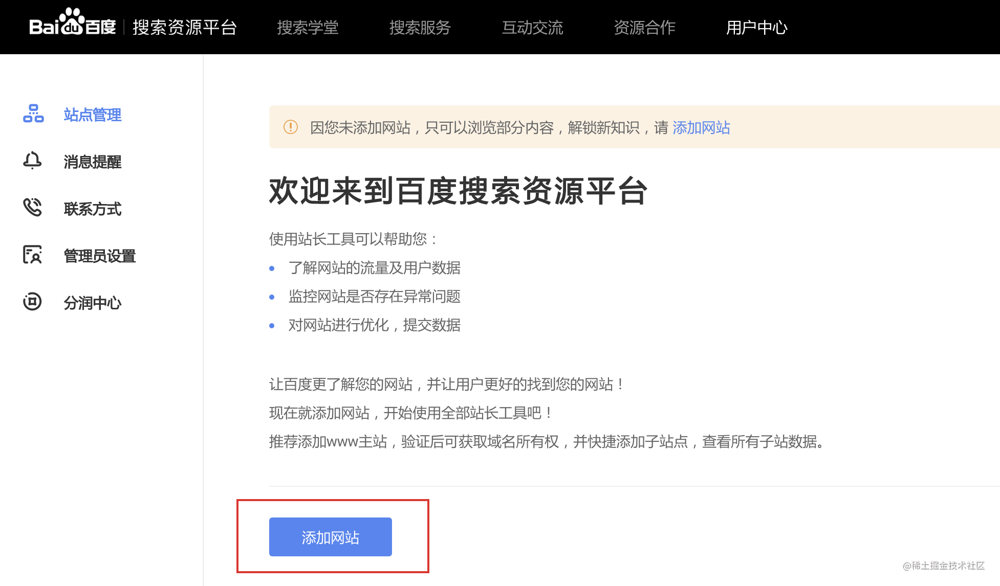
点击「添加站点」，可能需要你完善下账户信息，然后会进入站点信息填写页面，分为三步：
第一步：输入站点
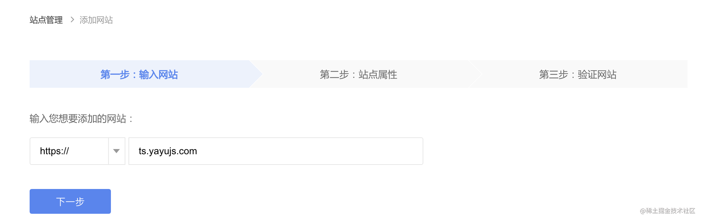
第二步：站点属性
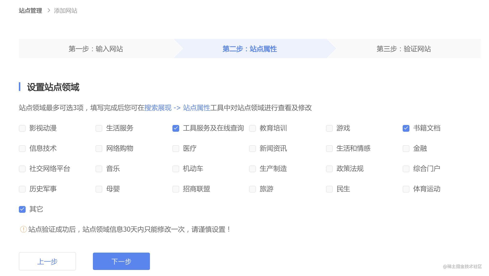
第三步：验证网站
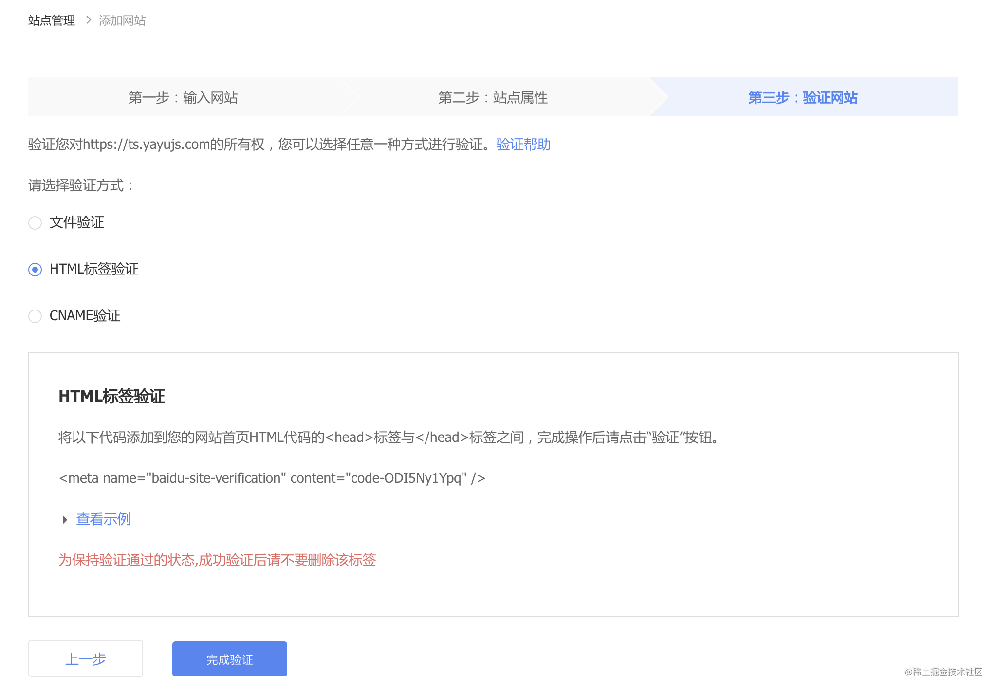
之所以需要验证网站，是为了证明你是该域名的拥有者，验证成功后，可以快捷批量添加子站点，查看所有子站数据，无需再一一验证子站点。
这里我采用的是 HTML 标签验证的方式，根据图中的代码指示，修改 vuepress 的 config.js 文件：
然后点击「完成验证」，就会出现：
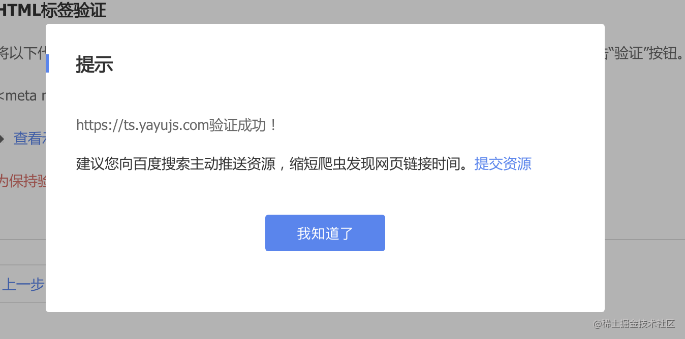
点击「我知道了」，就会跳转到 HTTPS 认证这里：
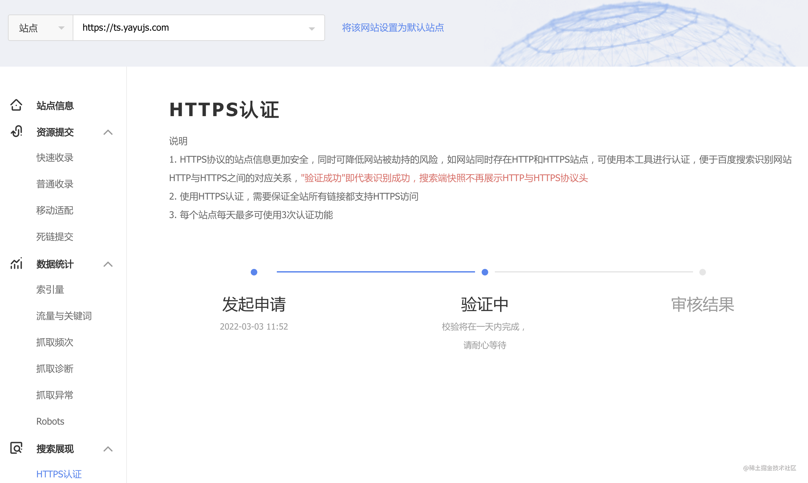
等待一天后，会显示认证成功：
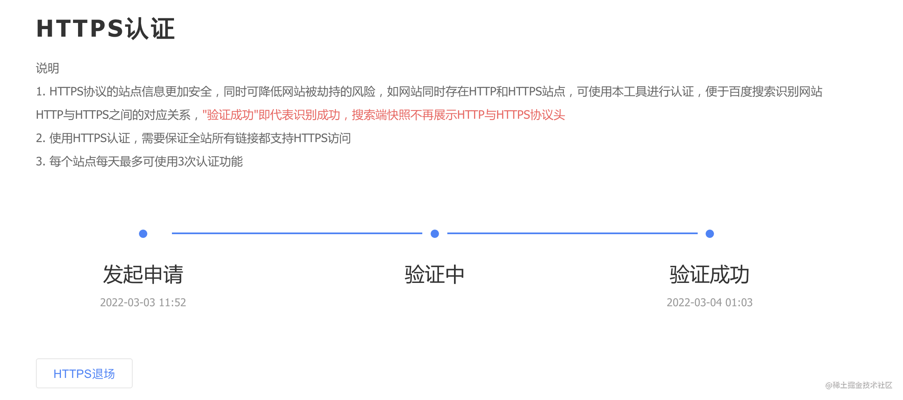
提交收录¶
在站点管理页面，点击「普通收录」：
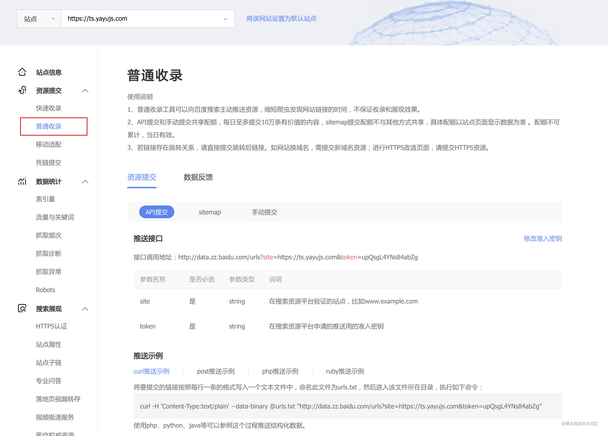
普通收录工具可以向百度搜索主动推送资源，缩短爬虫发现网站链接的时间，不保证收录和展现效果。
这里提供了三种方式收录：API 提交、sitemap、手动提交，那该如何选择呢？参考平台工具使用手册：
API推送：最为快速的提交方式，建议您将站点当天新产出链接立即通过此方式推送给百度，以保证新链接可以及时被百度收录。
sitemap：您可以定期将网站链接放到Sitemap中，然后将Sitemap提交给百度。百度会周期性的抓取检查您提交的Sitemap，对其中的链接进行处理，但收录速度慢于API推送。
手动提交：如果您不想通过程序提交，那么可以采用此种方式，手动将链接提交给百度。
这里我选择的是 sitemap 方式，填写上节获得的 sitemap 地址：
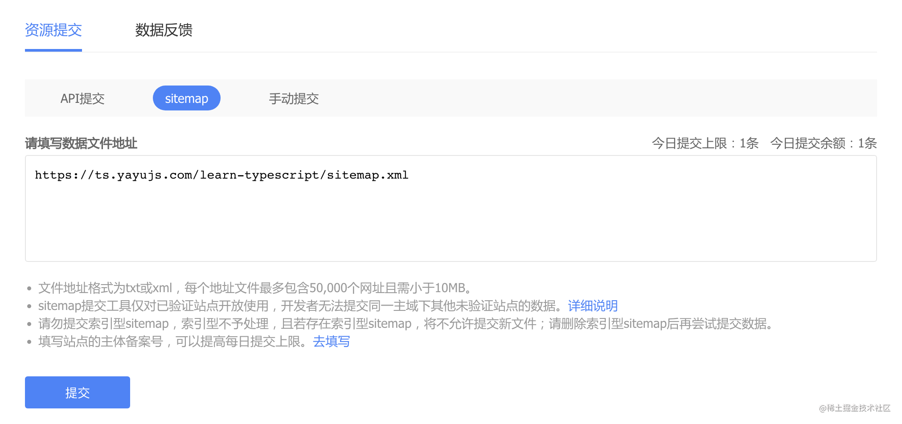
提交后，就会进入等待抓取状态：
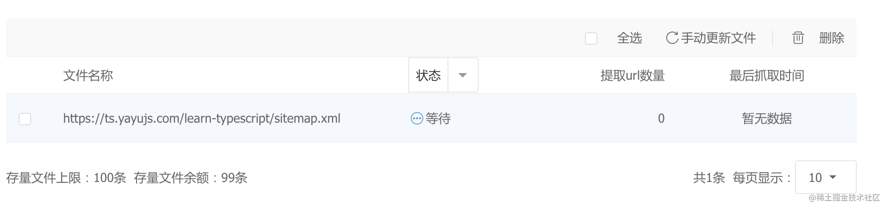
如何把你的网址提交给谷歌？¶
向Google（和其他搜索引擎）提交网站非常容易。
只需观看我们的视频教程，或按照下面的书面步骤操作即可。
https://youtube.com/watch?v=H2a6H5vOKOk
Google于2018年7月停止了网址提交工具。现在，提交网站的唯一方法是在Google Search Console, Google Search Console（谷歌站长工具）中添加你的Sitemap（网站地图）。
什么是Sitemap（网站地图）？ 网站地图是一个能列出网站上所有页面的文件。 它通常是一个XML文件，看起来像这样：
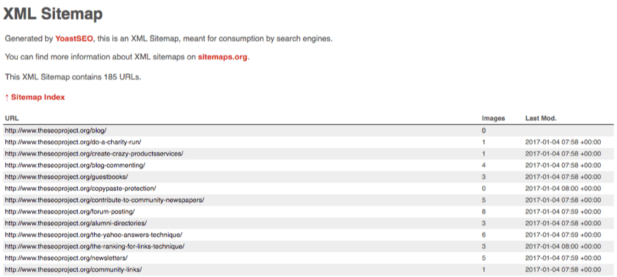
这个是一个最常见的网站地图，列出了我的博客中所有的帖子。
你的网站地图通常可以的通过 yourdomain.com/sitemap.xml 这样的方式进行访问。如果你访问不了，你可以通过 yourdomain.com/robots.txt 查看下你的 robots.txt 文件。通常这里会显示你的网站地图地址。
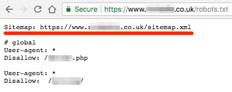
没有网站地图?
你需要制作一个。
有几种方式都可以做网站地图。如果你使用的是Wordpress程序（或者是其它的CMS），那么你可以使用对应的插件来生成网站地图。我们推荐使用Yoast SEO插件。对于静态的网站来说，可能这个网站地图工具会更加的适合。如果你喜欢手动的方法去做网站地图，你可以参考这个教程去使用 Screamingfrog工具。
找到了你的网站地图？非常好，现在你只需要把网站地图通过Search Console提交给搜索引擎。
Search Console > select your property > Sitemaps > paste in your sitemap URL > hit “submit”
搜索控制台>选择你的网站>站点地图>粘贴你的站点地图网址>点击“提交”
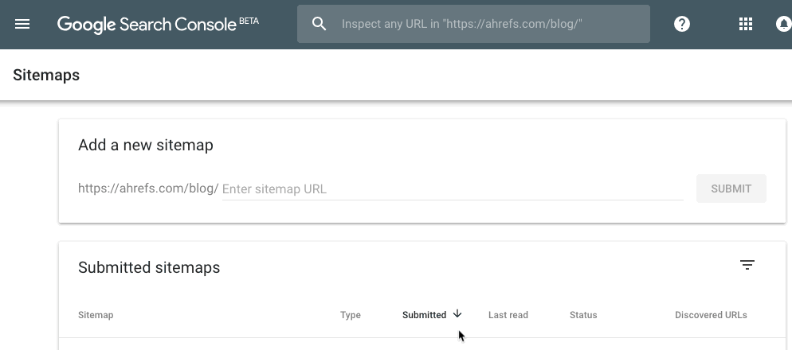
小提示：你需要验证Google Webmaster Tools（谷歌站长工具）之后才可以使用网站地图提交功能。如果你没有验证过，请看下这个教程。
请注意，这里我使用的是新版本的谷歌站长工具，下面是旧版的提交流程。
Search Console > select your property > Crawl > Sitemaps > Add/test sitemap > paste in your sitemap URL > hit “submit”
搜索控制台 > 选择你的网站 > 抓取 > 站点地图 > 添加/测试站点地图 > 粘贴你的站点地图网址> 点击“提交”
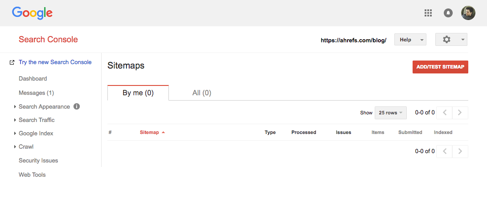
如果你有多个网站地图（比如你使用Yoast插件的时候）只需要重复刚才的操作就可以。
如果你只想提交单个网址给搜索引擎¶
谷歌之前是提供过一个提交单一网址的功能的，但是在2018年的时候这个功能已经不再使用了。
但是，你依然可以使用旧版的谷歌站长工具。你可以通过 Fetch as Google（模拟谷歌抓取）功能，来提交你的单个页面网址。下面是步骤。
Search Console > Crawl > Fetch as Google > paste in your URL > Fetch
搜索控制台>抓取>抓取为Google>粘贴到你的网址>抓取
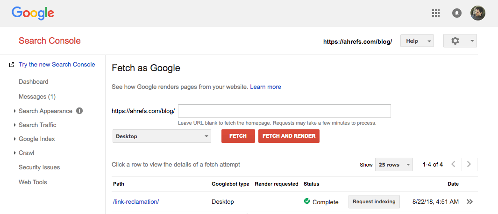
然后你得点击 Request indexing（请求索引）按钮。点击之后会弹出一个下方这样的弹窗。
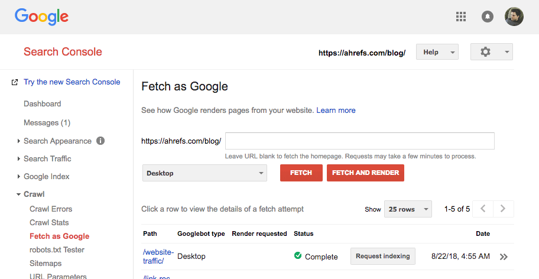
勾选 I’m not a robot（你不是机器人）选项，然后选择是否要Google抓取此网址，或者是此网址以及它的跳转链接。
这样，提交就完成了。
但是在新的Search Console中呢？ 你还能这样吗？
谷歌似乎已经删除了 Fetch as Google（模拟谷歌抓取）工具，替换成了 URL inspection tool（URL检查工具）。 这个工具的主要目的是检查URL所出现的问题。同时，当你选择重新抓取的时候，它在的云运行原理其实和模拟谷歌抓取功能是一样的。
问题在于，是谷歌在关于使用这个工具的说明上并没有太多的用处。下方就是谷歌给出的说明。
提交URL，并要求索引：
- 使用 Inspect the URL (URL检查工具）检查URL。
- 选择 Request indexing （请求索引） 该工具将对URL运行实时测试，以查看它是否有任何明显的索引问题，如果没有，页面将排队等待索引。 如果该工具发现页面有问题，你需要尝试去修复这些问题。
URL检查很容易找到，但是就是找不到请求索引的按钮。
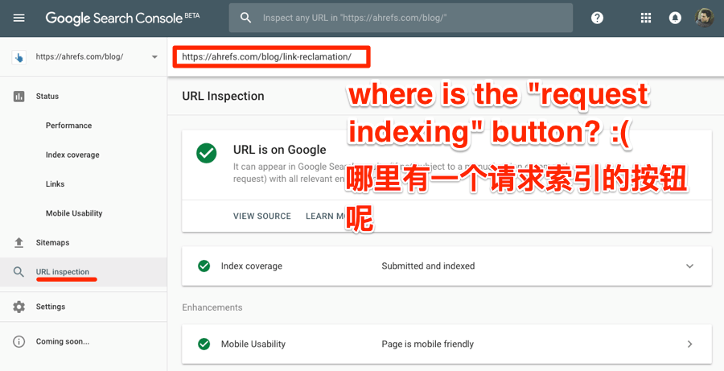
所以，现在我们不确定这是如何工作的。 但是，这个工具仍处于测试阶段，Google可能会在以后添这个功能按钮。
但是，就目前而言，你应该坚持使用旧版Search Console中的 Fetch as Google（模拟谷歌抓取）工具。
确认收录¶
可以在谷歌搜索栏使用 site:域名, 来确认站点是否已被谷歌收录
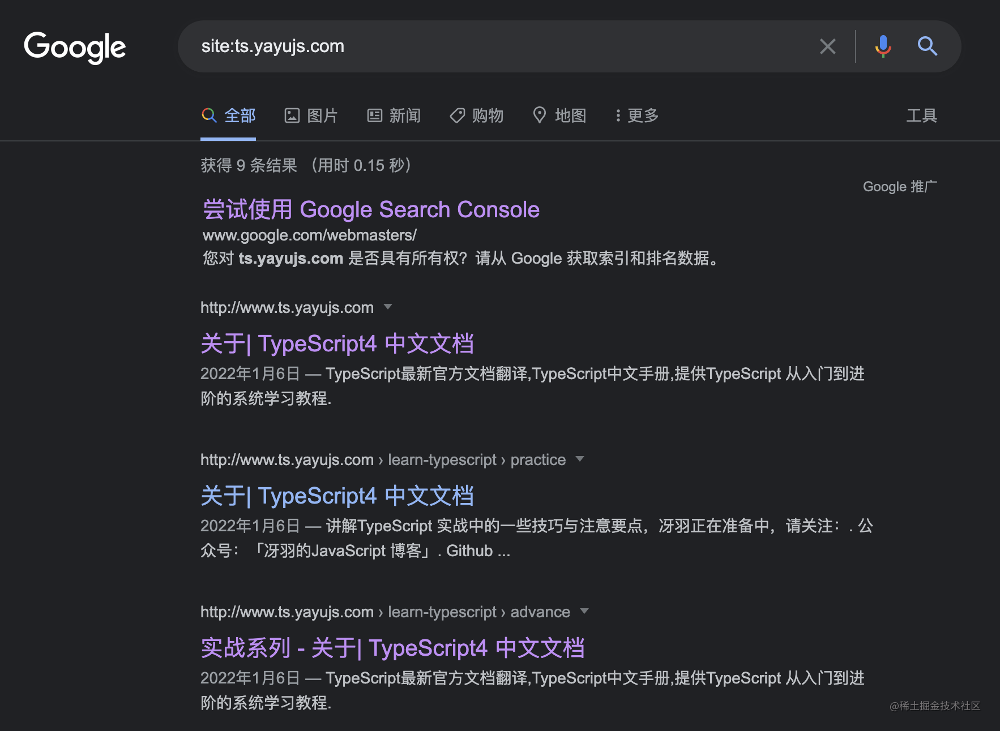
如何向Bing（必应）和Yahoo（雅虎）搜索引擎提交你的网站¶
我们建议使用 Bing Webmaster Tools（Bing站长工具）中的网站提交功能。
Webmaster Tools > “add your site” > fill in the form > hit “submit”
网站站长工具>添加你的网站>填写表单>点击“提交”按钮
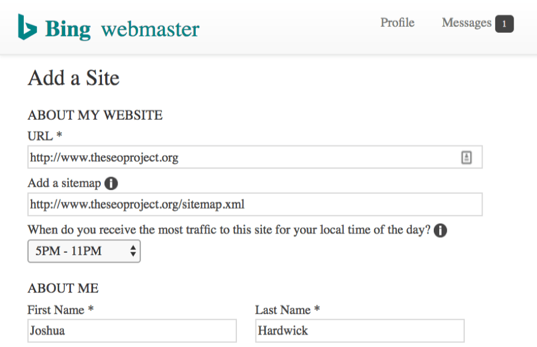
如果要将网站提交给Yahoo，你不需要执行任何操作， Bing支持Yahoo的索引。 通过提交Bing，你的网站将自动提交给Yahoo搜索引擎。
小提示 小提示：你的网站在中国有受众么？你可以提交你的网站到Baidu（76%+的搜索引擎市场份额）。如果没有的话，那么你只需要提交Google，Bing和Yahoo就可以了。我们这个文章不会针对Baidu去所，但是这里是提交百度搜索引擎的教程。
如何检查网站是否被索引¶
使用在谷歌使用site高级搜索功能，就能够检测你的网址是否备索引。
这里是高级搜索的代码：site:yourdomain.com/page-to-check/
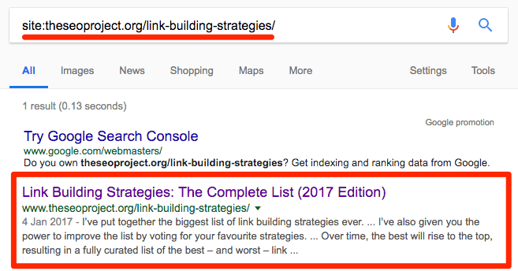
同时，你可以通过Site+你的主域名去查看整体的索引情况。
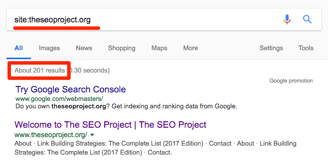
小提示 这种方式在谷歌和必应搜索引擎里都有效。
没有结果？那么你的网站或网页可能尚未编入索引。
如果，在你公开网站后的几天没有数据，请不要担心。 但是，如果在一周或两周之后仍未编入索引，那么你的网站可能存在问题。
同时，你还可以在Google Search Console（谷歌站长工具）中查看网站的索引状态。 但是，只有新的Google Search Console才会显示索引页面列表。
Search Console > Status > Index Coverage
搜索控制台>状态>索引覆盖率
转到 Valid（有效）标签，然后选择 Indexed, not submitted in sitemap（已建立索引，未在站点地图中提交）或 Submitted and indexed（已提交并已编入索引），以查看Google索引中的页面URL列表。
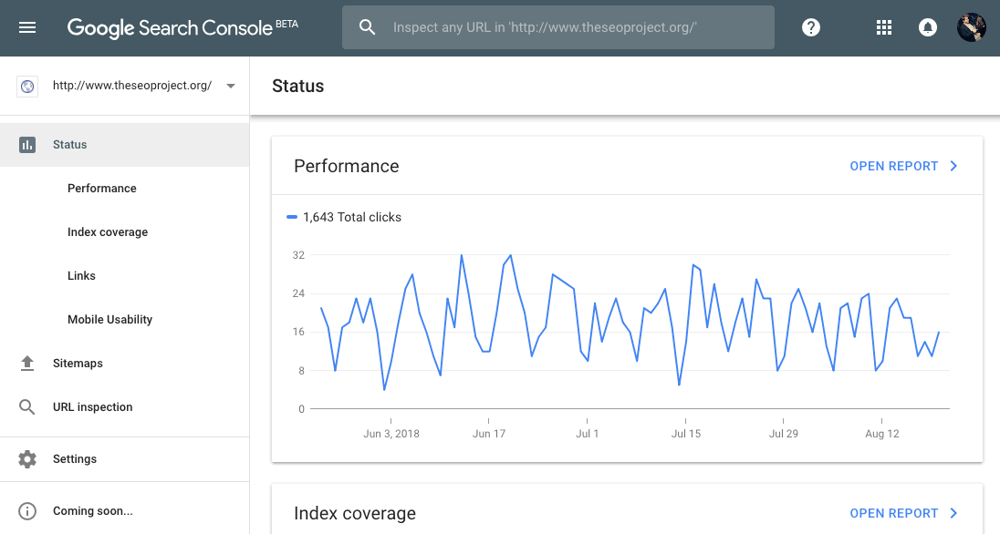
小提示 你也可以在Bing站长工具中进行相同的操作。
如果网站、网页不索引的话怎么办¶
如果你通过数据得出结论是，网站或网页没有编入索引。那么，你需要弄清楚为什么会这样。
以下是可能发生这种情况的一些常见原因，以及一些解决方案：
- 该网页有一个noindex标签 这告诉谷歌和其他搜索引擎不要索引当前页面。你可以检查网页上是否存在noindex标记，然后可以通过在页面的HTML中搜索noindex标记，来找到需要删除的标记位置（如果需要）。这里有关于noindex标签的更多信息;
- robots.txt文件在阻止索引 每个网站都有其中一个Robot.txt。它为蜘蛛提供了一系列要遵循的规则，例如其中规定了蜘蛛允许/不允许抓取的页面以及可以索引/不能索引的页面。你可以使用Google的 Robots Testing Tool（蜘蛛测试工具）检查robots.txt中是否阻止了目标网址。只需输入一个URL，它就会显示当前链接是否被允许或阻止。
- .htaccess文件阻止索引 这是在基于Apache的Web服务器上运行的网站的配置文件（大约占所有站点的46％）。如果你的.htaccess文件包含头部信息：X‑Robots-Tag “noindex，nofollow”，则应将其删除，允许谷歌蜘蛛抓取你的网址并索引。
小提示 如果上方检测没有任何问题的话。那么很可能是因为当前页面提供的内容质量过低。同时，也意味着你的网站有一些技术问题，可能你需要招聘一个SEO技术来解决这个问题。
同时，你可以使用 URL inspection tool （URL检查工具）。
Search Console > URL inspection > enter page URL > hit enter
搜索控制台 > URL检查 > 输入页面UR L> 按回车键
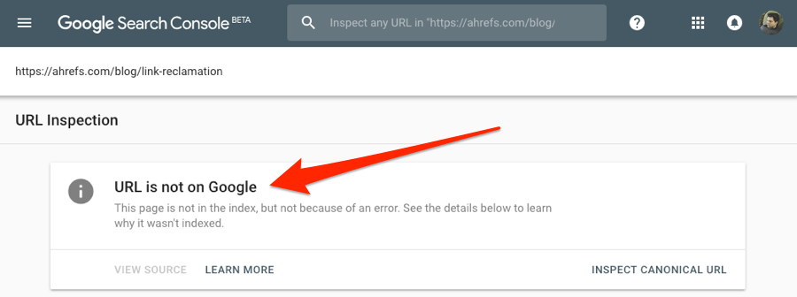
你可以看到这个页面并没有被索引，为什么呢？
向下滚动，谷歌会提供更多详细信息。 这个页面不索引是因为有一个301重定向和 canonical tag（规范标签）存在。
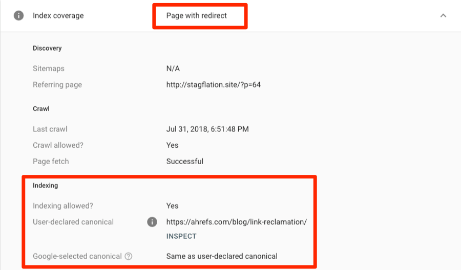
面对Canonical这样问题你不需要担心。但是如果谷歌返回一些真正的索引问题，你可能就需要针对问题进行修改，并让自己的页面索引。
小提示 你可以在这里找到一些不被索引的原因列表。
为什么提交网站不等于网站参与排名（以及如何修复）¶
多数情况下，谷歌搜索会返回成千上万的搜索结果。
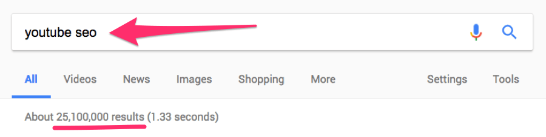
但是大多数人基本上都停留在搜索的第一页。这意味着排名超过位置＃10的页面，几乎是没有流量的。 出于这个原因，被索引并不一定意味着用户将能够找到你的网站。
如果您想要自然流量，就需要排在第一页（理想情况下是在前3个结果中）。
你怎么做到这一点？ 这很复杂，但你肯定需要的一件事是反向链接。
Google会统计反向链接的数量。 因此，当他们在同一主题上呈现两个或更多页面参与排名时，反向链接越多的页面更容易参与优质的排名。
译者注
其实这种说法并不科学。 我们绝对不会说具有更多反向链接的页面肯定可以参与优质排名。
但是话虽如此，当我们研究了近10亿个网页时，我们发现网页的 Referring Domains（引用域数量）与其整体收到的Google搜索流量数量是有一定相关性的。
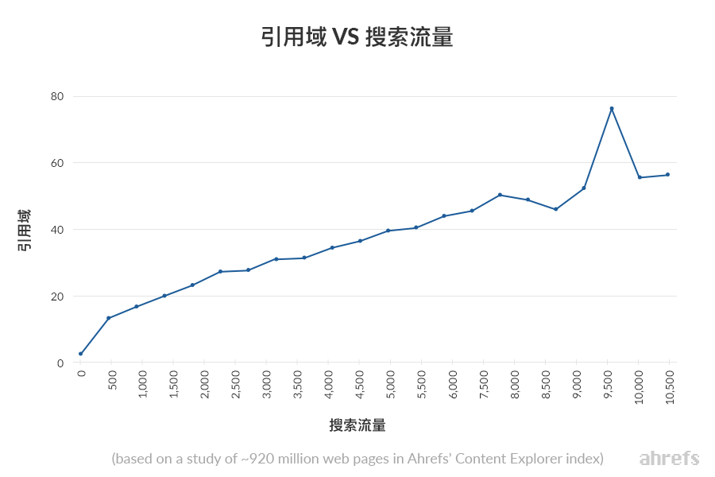
你可以使用Ahefs中 Keywords Explorer 报告的 SERP overview （SERO总览报告）部分看到排名前十10的页面分别获得了多少链接。
Keywords Explorer > enter the keyword you want to rank for > SERP overview
关键字资源管理器>输入您要为其排名的关键字> SERP概述
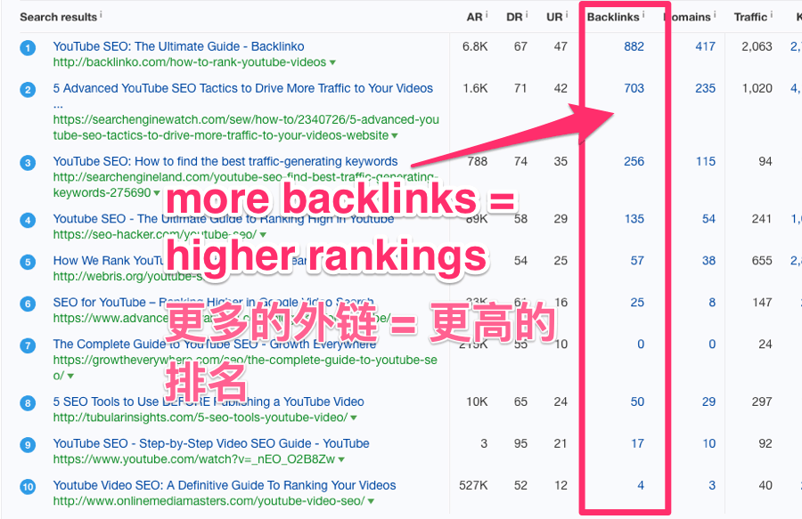
这可以让你大致了解首页排名可能需要多少反向链接。 （同时你还可以查看我们的关键字难度分数，以获得相关信息。）
但并非全依靠链接。你还需要确保你的页面优化到位，并确保关键字定位准确。
以下是一些可以帮助解决这些问题的文章。
更多阅读：
- 新手友好的链接建设指南
- 丢失链接建设的简单（完整）指南
- 如何使用TRUST公式获得高质量的反向链接[案例研究]
- 解析Linkbait：如何创建吸引反向链接的内容
- 7种可行的方法来搜刮竞争对手的反向链接
- 页面SEO：一个（2百万关键字）数据分析
- 如何做SEO的关键词研究
- 如何衡量关键字难度，找到最容易排名的关键词
- 寻找具有庞大流量潜力的未开发关键字的4种方法
- 长尾关键词：如何从“不受欢迎的”搜索中获得大流量
- 为什么不能盲目信任关键字搜索量进行流量估算
最后总结¶
即使你没有提交你的网站，Google也可能会找到你的网址。 Bing和其他搜索引擎也是如此。
话虽如此，我们仍建议您使用上述网站地图方法，手动提交你的网站。 为什么？ 因为则可以为Google和Bing提供了有关网站的额外信息，并且作为回报，他们会为你提供更多的数据。
对于做过页面更新的，同样值得重新提交。
但请记住，获取索引只是优化的一部分。 不在SEO工作中投入，是不会有回报的。
凡本网注明"来源：XXX "的文/图/视频等稿件，本网转载出于传递更多信息之目的，并不意味着赞同其观点或证实其内容的真实性。如涉及作品内容、版权和其它问题，请与本网联系，我们将在第一时间删除内容！
作者: Joshua Hardwick
来源： https://ahrefs.com/blog/zh/submit-website-to-search-engines/